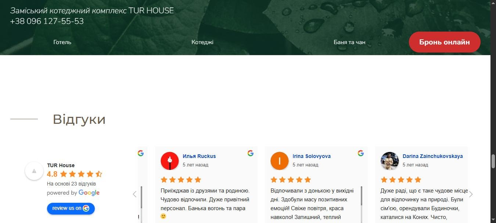
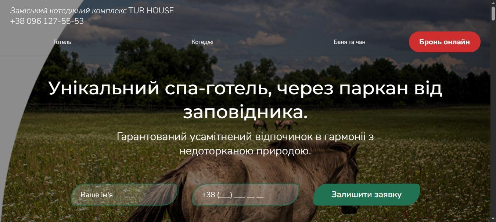
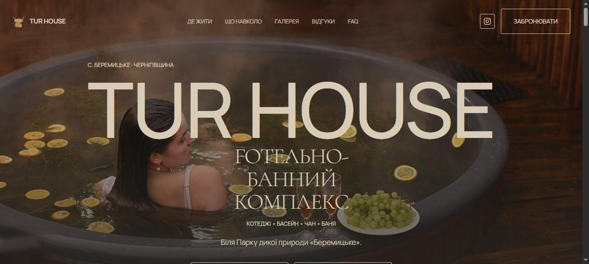

Tur House
Загородный отельно-банный комплекс под Киевом. Пришёл сделать маркетинговый аудит, выявил ключевую нишу, собрал новый лендинг, оживил Google-карточку и вывел комплекс на полную загрузку в первый же уикенд.
Что я увидел на старте
По личной рекомендации от знакомой, связанной с командой комплекса. Пришёл посмотреть, а не продавать: сначала аудит, дальше разберёмся.
Зацепило вот что. У бизнеса живая аудитория в Instagram, 8600+ подписчиков, настоящие люди, которые реагируют на посты. А в интернете этот бизнес выглядел так, будто закрылся года три назад. Сайт древний, профиль в Google заброшен, реклама у действующего подрядчика крутится, деньги списываются, брони не растут.
Между тем, какой это бизнес на самом деле, и тем, каким его видит гость за минуту до брони, лежала пропасть. Мне стало интересно её измерить.
Аудит
Руками я это не делал. На аудит у меня ушло пять AI-агентов.
Четверо работали в поле, каждый на своём направлении.
Репутация
Google-профиль, отзывы, рейтинги, ответы владельца.
Конкуренты
Кто ещё забирает того же гостя и на каких условиях.
Сайт
Техническое состояние, аналитика, теги, разметка, продуктовая линейка и то, как она упакована.
Реклама и рынок
Кабинет действующего подрядчика плюс бенчмарки ниши: какая доля броней в норме идёт через агрегаторы, какая конверсия считается нормальной для сайта отеля, сколько площадки забирают комиссии.
Пятый оркестрировал этих четверых: ставил задачи, собирал находки в одно место, разруливал противоречия и выдавал мне готовый структурированный анализ, а не четыре кучи сырья, которые надо ещё неделю разгребать.
Отсюда и час. Четверо не устают, не отвлекаются и не забывают проверить восьмой пункт, потому что увлеклись третьим. Тот же объём руками занял бы несколько дней, причём половина времени ушла бы на вспоминание, что ещё не проверено.
Мне осталось то, за что платят: решения. Агенты приносят картину, но не знают, что в ней важно, а что шум, и не чувствуют, когда сами собрали ерунду. Дальше по тексту будет ровно такой случай.
Находка, ради которой стоило всё затевать
На главной странице сайта висел виджет с отзывами: 4.8 звезды, «На основі 23 відгуків». Все отзывы датированы 2021 годом. Пять лет назад.
Открываешь Google Maps: 4.2 из 142 отзывов, сверху свежие однозвёздочные, и ни на один нет ответа владельца.
Гость видит обе цифры за тридцать секунд. Сайт утверждает одно, реальность показывает другое, и после этого он перестаёт верить сайту целиком, вместе с фотографиями и ценами. Это не косметика. Это дыра в доверии ровно в той точке, где принимается решение о брони.
Я заскриншотил это сразу, не откладывая. Правильно сделал: старый сайт уже уходит с домена, и через неделю доказательства было бы взять негде.

Один гость сформулировал проблему лучше меня. Дословная цитата из отзыва в Google:
«обрали відпочинок за фото в Instagram, але картинка виявилась дуже далекою від реальності»
Это самый дорогой тип поломки, какой бывает. Маркетинг обещает больше, чем продукт отдаёт, и каждый привлечённый гость с завышенным ожиданием возвращается однозвёздочным отзывом. Реклама в такой конфигурации не приносит деньги, а ускоряет падение. Чем больше открутишь, тем быстрее испортишь себе Google.
Что ещё нашлось
Реклама приводила клики, но почти не давала броней. То есть проблема была не в рекламе. Проблема была в том, что происходит после клика.
Продуктовая линейка не была упакована: у самого вместительного и дорогого формата размещения на сайте вообще не было цены. Он существовал в системе бронирования и не существовал на витрине.
Цены на сайте устарели. Гость видел одну цифру, а на заезде получал другую. Это бьёт по доверию ещё до того, как он доехал.
И сам сайт технически состарился: WordPress с Elementor, структура и контент не обновлялись годами.
Где я ошибся и как это починил
Вот обещанный случай.
Агент принёс анализ конкурентов «по нише вообще»: похожие загородные комплексы по стране. Задачу он выполнил ровно так, как я её поставил. Проблема была в постановке.
Посмотрел на результат и понял, что выборка бесполезная. Для загородного отдыха конкурент это не «похожий бизнес где-то в стране». Конкурент это тот, до кого гость физически доедет за то же время в ту же субботу.
Переставил задачу и погнал заново. Разложил конкурентов по кругам физической доступности от Киева, считая по дорогам через Google Directions, а не по прямой линии на карте.
Круг 1, около 4 км
Парк-отель при том же природном парке. 39 домиков, онлайн-бронь на своём сайте и на двух площадках, рейтинг 9.5. Главный конкурент, и он буквально по соседству.
Круг 2, 33-37 км, тот же берег
Четыре объекта, рейтинги 4.1-4.6, у каждого сотни отзывов.
Круг 3, за мостом, около часа пути
Формально близко по километрам, фактически другой рынок. В конкуренты не идёт, только фоном.
И тут выпало главное. В ближайшем круге пустая ниша: приватный спа-отдых в диапазоне 2000-5000 грн на этом берегу не занимает никто. Сосед закрывает «много домиков рядом с парком», дальние закрывают «дорого и статусно», а «приватно, с баней, в тишине, за адекватные деньги» свободно.
Дифференциация Tur House легла ровно сюда. Приватность, баня, тишина. Это стало опорой для нового сайта: для первого экрана, для порядка блоков, для всей логики текста.
Без пересборки выборки этого вывода просто не было бы. В «нише вообще» Tur House выглядел одним из многих. В круге физической доступности он оказался единственным в своей категории. Одна и та же реальность, два противоположных ответа, и вся разница в том, что я не поленился перепроверить собственный результат.
Аудит, кстати, клиент так и не увидел. Он остался моим внутренним документом. Наружу пошли выводы и решение, а не тридцать страниц таблиц.
Лендинг
Из аудита следовало решение: старый сайт не чинить, а собирать новый под найденную нишу. Разница видна уже на первом экране.


Почему с нуля, а не чинить старый. По опыту, собрать заново почти всегда быстрее, чем чинить то, что не работает. Старый сайт это WordPress на Elementor, не обновлявшийся годами. Разбирать чужие настройки и наслоения дольше и дороже, чем построить новое.
Главный принцип: минимум вмешательства заказчика. Владелец загородного комплекса занят своим комплексом. Он не должен превращаться в проджект-менеджера моего проекта. Полностью без клиента такое, конечно, не собрать, поэтому все рабочие вопросы по ходу я закрывал через доверенное лицо заказчика, а не дёргал владельца по каждой мелочи. За четыре подхода доработок получился лендинг, который на этом этапе полностью его устроил.
Что сделано технически
Первую версию я собрал на фотографиях, вытащенных из Instagram клиента. Это отдельная маленькая история: у Reels нет обычной картинки-превью, а карусельные превью профиль отдаёт склейкой 2х2, и её пришлось резать на отдельные кадры. В финале все эти фото заменены на качественные оригиналы от клиента. IG-версии были нужны, чтобы не останавливать сборку и показать макет на реальном контенте, а не на стоке с улыбающимися незнакомцами.
Аналитику я не заводил заново, а перенёс со старого сайта: два контейнера тег-менеджера, GA4 и пиксель соцсети. Разница принципиальная. Новые счётчики означали бы потерю истории и всех настроенных событий, а это единственное, что у бизнеса было накоплено за годы.
Добавил структурированную разметку JSON-LD, чтобы поисковики понимали, что это за объект, где он и что предлагает.
Кнопку бронирования завёл в ту же систему, которой клиент уже пользуется. Ничего нового осваивать не нужно, ни ему, ни администратору на телефоне.
Дизайн-система по ходу поменялась. Сначала была одна палитра, потом клиент показал референс, и я пересобрал визуал под него, не переписывая контент. Тексты и структура к тому моменту уже были выстраданы аудитом, ломать их из-за цвета было бы глупо.
Сроки
Первую версию собрал за одну ночь.
Прямо в процессе сборки стало ясно, что не хватает нормальных фотографий, и я запросил их сразу, не дожидаясь конца работы. Это мелочь, но она экономит сутки: когда фото пришли вместе с комментариями к первой версии, я внёс всё одним заходом, а не двумя.
Дальше пошли уже точечные доработки и актуализация. В частности, на лендинге появились действующие цены вместо тех, что висели на старом сайте с незапамятных времён.
Реанимация Google-карточки
Сайт готов, но перед бронью гость всегда открывает Google Maps. Если там разруха - реклама льётся в пустоту. Поэтому следующим шагом мы привели профиль в идеальный порядок.
ЗАКРЫТЫ ВСЕ ОТЗЫВЫ
Закрыты абсолютно все отзывы, включая те, что годами висели без ответа и портили репутацию комплекса. Теперь у профиля 100% покрытие ответами.
Свежее меню
Старое меню со старыми ценами снесено полностью. Внесено 28 актуальных позиций в 5 разделах по реальному меню кафе.
Порядок в услугах
Удалены дублирующие услуги, прописаны точные атрибуты отеля (дети, условия для питомцев) и запущена промо-публикация с актуальной акцией.
Что предложил дальше
Работа не заканчивается сдачей сайта. Вместе с ним я отдал горизонт на год вперёд: что можно сделать с этим бизнесом дальше, в каком порядке и зачем. Намеренно без цен, задача была показать направление, а не дожать вторую продажу в том же документе.
Три направления.
SEO высшего уровня
Отдельная страница под бронирование плюс локальные SEO-страницы. Цель это рост брендового и гео-трафика и меньшая зависимость от агрегаторов, где каждая бронь стоит комиссии. KPI разложены на горизонт от трёх до двенадцати месяцев.
Автоворонка и автоматизация гостевого сервиса
Автоответы на сайте и в мессенджерах, бронирование без ручной переписки, база гостей, автонапоминания, автоапсейл, сбор отзывов. Отдельно порекомендовал не внедрять всё сразу: начать с трёх автоматизаций, заявки, брони и отзывы, а остальное по мере того, как первые заработают.
Технологические фишки и ИИ
QR или NFC-директория в номере: гость сканирует код, видит меню услуг со свободными слотами и ценами, заказывает и оплачивает на месте, заявка сразу падает в нужный отдел. Плюс ИИ-маркетолог по подписке, ИИ-бронирование номеров и бот для брони бани, Instagram на автопилоте, апгрейд сайта до многостраничного.
Это меню не обязательство и не давление. Оно отвечает на вопрос, который у владельца возникает ровно в ту секунду, когда новый сайт открылся: сайт есть, а дальше что.
Что получил клиент и первые результаты
- Боевой лендинг в проде, с текстом и структурой, выросшими из аудита, а не из шаблона.
- Продуктовая линейка упакована целиком, включая формат размещения, которого раньше на сайте просто не существовало.
- Актуальные цены вместо устаревших.
- Вся аналитика перенесена без потери истории и настроенных событий.
- Структурированная разметка под поисковики.
- Бронирование заведено в привычную клиенту систему.
- Карточка в Google Maps приведена в порядок: закрыты абсолютно все отзывы и обновлено меню.
Результат в цифрах и деньгах
Комплекс ощутил отдачу мгновенно: запустили акцию на уикенд, и буквально за пару дней все места были забронированы на 100%.
Самое показательное подтверждение работы связки Google + сайт: люди, которые писали бронировать в Instagram, присылали скриншоты со страниц нового сайта, куда они перешли прямо из органического поиска Google.
Увидев мгновенный финансовый результат, клиент принял решение двигаться дальше: сейчас мы масштабируем проект в полноформатный многостраничный сайт и подключаем глубокое поисковое продвижение (SEO), чтобы окончательно убрать зависимость от агрегаторов и комиссий.